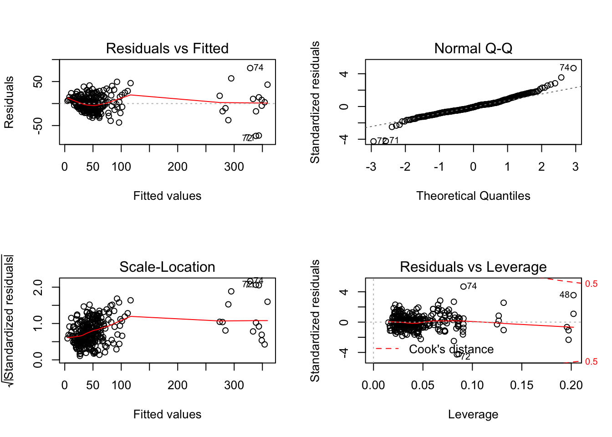

regression_analysis
Ava Hamilton
12/1/2019
read in data
nyc <- read_csv(file = "../p8105nyc_311_100k.csv") %>%
janitor::clean_names()## Warning: 13949 parsing failures.
## row col expected actual file
## 100085 taxi_pick_up_location 1/0/T/F/TRUE/FALSE WEST 50 STREET AND BROADWAY '../p8105nyc_311_100k.csv'
## 100150 taxi_pick_up_location 1/0/T/F/TRUE/FALSE JFK Airport '../p8105nyc_311_100k.csv'
## 100172 taxi_pick_up_location 1/0/T/F/TRUE/FALSE 625 EAST 14 STREET MANHATTAN '../p8105nyc_311_100k.csv'
## 100215 taxi_pick_up_location 1/0/T/F/TRUE/FALSE Other '../p8105nyc_311_100k.csv'
## 100268 taxi_pick_up_location 1/0/T/F/TRUE/FALSE Other '../p8105nyc_311_100k.csv'
## ...... ..................... .................. ............................. ..........................
## See problems(...) for more details.nyc_tidy <- nyc %>%
filter(borough != "Unspecified") %>%
separate(closed_date,
into = c("closed_month","closed_day","closed_year"),
sep = "\\/" ) %>%
separate(closed_year,
into = c("closed_year","closed_time"),
sep = " ") %>%
mutate(
created_year = as.numeric(created_year),
created_month = as.numeric(created_month),
created_day = as.numeric(created_day),
city = as.factor(city),
status = as.factor(status),
borough = as.factor(borough),
agency = as.factor(agency),
complaint_type = as.factor(complaint_type),
community_board = as.factor(community_board),
open_complaint = ifelse(status == "Closed", yes = 0, no = 1),
# open_complaint = ifelse(is.na(closed_year), yes = 1, no = 0),
complaint_simp = case_when(
str_detect(complaint_type,
regex("street", ignore_case = TRUE))
|str_detect(complaint_type,
regex("sidewalk", ignore_case = TRUE))
|str_detect(complaint_type,
regex("curb", ignore_case = TRUE)) ~ "Street Condition",
str_detect(complaint_type,
regex("noise", ignore_case = TRUE)) ~ "Noise",
str_detect(complaint_type,
regex("heat", ignore_case = TRUE)) ~ "Heat",
str_detect(complaint_type,
regex("water", ignore_case = TRUE))
|str_detect(complaint_type,
regex("leak", ignore_case = TRUE))
|str_detect(complaint_type,
regex("plumbing", ignore_case = TRUE))
|str_detect(complaint_type,
regex("boiler", ignore_case = TRUE)) ~ "Water/plumbing",
str_detect(complaint_type,
regex("paint", ignore_case = TRUE)) ~ "Paint/Plaster",
str_detect(complaint_type,
regex("asbestos", ignore_case = TRUE))
|str_detect(complaint_type,
regex("lead", ignore_case = TRUE))
|str_detect(complaint_type,
regex("hazard", ignore_case = TRUE))
|str_detect(complaint_type,
regex("mold", ignore_case = TRUE)) ~ "Hazard Material",
str_detect(complaint_type,
regex("elevator", ignore_case = TRUE))
|str_detect(complaint_type,
regex("maintenance", ignore_case = TRUE))
|str_detect(complaint_type,
regex("electric", ignore_case = TRUE))
|str_detect(complaint_type,
regex("stairs", ignore_case = TRUE))
|str_detect(complaint_type,
regex("window", ignore_case = TRUE))
|str_detect(complaint_type,
regex("appliance", ignore_case = TRUE)) ~ "Maintenance",
str_detect(complaint_type,
regex("sanita", ignore_case = TRUE))
|str_detect(complaint_type,
regex("rodent", ignore_case = TRUE))
|str_detect(complaint_type,
regex("dirty", ignore_case = TRUE))
|str_detect(complaint_type,
regex("sew", ignore_case = TRUE))
|str_detect(complaint_type,
regex("standing water", ignore_case = TRUE)) ~ "Sanitation",
str_detect(complaint_type,
regex("tree", ignore_case = TRUE)) ~ "Tree",
str_detect(complaint_type,
regex("parking", ignore_case = TRUE))
|str_detect(complaint_type,
regex("car", ignore_case = TRUE))
|str_detect(complaint_type,
regex("drive", ignore_case = TRUE))
|str_detect(complaint_type,
regex("vehicle", ignore_case = TRUE))
|str_detect(complaint_type,
regex("traffic", ignore_case = TRUE)) ~ "Car/Traffic",
str_detect(complaint_type,
regex("air", ignore_case = TRUE)) ~ "Air Quality",
str_detect(complaint_type,
regex("collection", ignore_case = TRUE)) ~ "Collection",
str_detect(complaint_type,
regex("homeless", ignore_case = TRUE))
|str_detect(complaint_type,
regex("panhandling", ignore_case = TRUE)) ~ "Homeless"),
health_complaint = ifelse(
complaint_simp %in% c("Heat", "Water/Plumbing", "Hazard Material", "Sanitation", "Air Quality"), yes = 1, no = 0),
complaint_simp = as.factor(complaint_simp),
open_health_complaint = case_when(
open_complaint == 1 & health_complaint == 1 ~ 1,
open_complaint == 0 | health_complaint == 0 ~ 0
),
# openCorr = ifelse(status == "Closed", yes = 0, no = 1),
status = as.factor(status)
)## Warning: Expected 2 pieces. Additional pieces discarded in 489924 rows [1,
## 2, 3, 4, 5, 6, 7, 8, 9, 11, 12, 13, 14, 15, 16, 17, 18, 20, 21, 22, ...].Adding community district data
inc_df = read_csv("./Med_income_2017.csv") %>%
janitor::clean_names() %>%
mutate(
pop_1000s = round(total_population/1000, 0),
inc_1000s = round(median_income/1000, 1),
income_bracket = case_when(
median_income >= 20000 & median_income <= 30000 ~ "20k-30k",
median_income > 30000 & median_income <= 40000 ~ "30-40k",
median_income > 40000 & median_income <= 50000 ~ "40-50k",
median_income > 50000 & median_income <= 60000 ~ "50-60k",
median_income > 60000 & median_income <= 70000 ~ "60-70k",
median_income > 70000 & median_income <= 80000 ~ "70-80k",
median_income > 80000 & median_income <= 90000 ~ "80-90k",
median_income > 90000 & median_income <= 100000 ~ "90-100k",
median_income > 100000 & median_income <= 125000 ~ "100-125k",
median_income > 125000 & median_income <= 150000 ~ "125k+",
),
income_bracket = as.factor(income_bracket)
)
# adding income to data and removing any observations that do not have a specific community board to link to income
add_inc = left_join(nyc_tidy, inc_df, by = "community_board") %>%
filter(is.na(median_income) == FALSE) %>%
mutate(
year_fac = as.factor(created_year)
)## Warning: Column `community_board` joining factor and character vector,
## coercing into character vectorAggregating data to community district and year level
To examine the effect of community district level variables on total number of complaints we must first aggregate to the community district level. We are also interested in how year effects the number of complaints in each district so we group by year as well to produce complaint totals for each year and community district.
Once we have complaint totals, we do not want individual complaint information anymore. We select distinct year * community district observations.
# grouping by community district and year
cb_group_year = add_inc %>%
group_by(community_board, created_year) %>%
add_count(community_board, name = "number_complaints") %>%
mutate(
num_unsolved = sum(open_complaint),
num_health_complaint = sum(health_complaint),
num_open_health = sum(open_health_complaint)
) %>%
select(number_complaints, num_unsolved, num_open_health, everything())
########## including year
cb_group_year_distinct = cb_group_year %>%
select(community_board, number_complaints, inc_1000s, num_unsolved, num_health_complaint, borough, per_black_nh, per_hisp, per_white_nh, median_income, num_open_health, created_year, year_fac, pop_1000s) %>%
distinct() %>%
arrange(community_board) %>%
mutate(
borough = relevel(borough, ref = "MANHATTAN")
)
cb_group_year_distinct = within(cb_group_year_distinct, borough <- relevel(borough, ref = "MANHATTAN"))
manhanttan_distinct = cb_group_year_distinct %>%
filter(borough == "MANHATTAN")
brooklyn_distinct = cb_group_year_distinct %>%
filter(borough == "BROOKLYN")
bronx_distinct = cb_group_year_distinct %>%
filter(borough == "BRONX")
queens_distinct = cb_group_year_distinct %>%
filter(borough == "QUEENS")
SI_distinct = cb_group_year_distinct %>%
filter(borough == "STATEN ISLAND")What neighborhood characteristics effect number and type of complaints in each community district?
We conducted linear models to examine predictors of number of complaints from 2014-2018 per community district. Our three outcomes were:
- Total number of complaints
- Number of health complaints
- Number of unresolved complaints.
We looked at these categories of complaints from 2014-2018 predicted by year, and community district level variables including median income (in the 1000s), total population (in the 1000s), percent non-hispanic black and percent Hispanic. For outcomes 1 and 2 we included number of unresolved complaints as a predictor as well.
As we have equal complaints across borough we startified our analysis to predict number of complaints within each borough.
1) Number of complaints by NYC community district:
A) Bronx
# number of complaints
options(scipen = 5)
nom_comp_bronx = lm(number_complaints ~ inc_1000s + num_unsolved + per_black_nh + per_hisp + pop_1000s +created_year, data = bronx_distinct)
summary(nom_comp_bronx) %>% broom::tidy() %>% knitr::kable()| term | estimate | std.error | statistic | p.value |
|---|---|---|---|---|
| (Intercept) | -202744.174591 | 47945.281998 | -4.228657 | 0.0000933 |
| inc_1000s | -28.726021 | 12.195282 | -2.355503 | 0.0222307 |
| num_unsolved | -4.486933 | 2.353502 | -1.906492 | 0.0620144 |
| per_black_nh | -17.477769 | 9.496429 | -1.840457 | 0.0713027 |
| per_hisp | -23.143901 | 13.319895 | -1.737544 | 0.0880995 |
| pop_1000s | 15.553096 | 1.070756 | 14.525340 | 0.0000000 |
| created_year | 101.928668 | 23.756619 | 4.290538 | 0.0000760 |
summary(nom_comp_bronx) %>% broom::glance() %>% knitr::kable()| r.squared | adj.r.squared | sigma | statistic | p.value | df |
|---|---|---|---|---|---|
| 0.8310758 | 0.8119523 | 236.84 | 43.45835 | 0 | 7 |
B) Brooklyn
# Brooklyn
nom_comp_brook = lm(number_complaints ~ inc_1000s + num_unsolved + per_black_nh + per_hisp + pop_1000s +created_year, data = brooklyn_distinct)
summary(nom_comp_brook) %>% broom::tidy() %>% knitr::kable()| term | estimate | std.error | statistic | p.value |
|---|---|---|---|---|
| (Intercept) | -190528.955935 | 31818.4774261 | -5.987997 | 0.0000001 |
| inc_1000s | 2.882396 | 1.1855879 | 2.431195 | 0.0172020 |
| num_unsolved | -3.544975 | 1.4453365 | -2.452699 | 0.0162738 |
| per_black_nh | 4.848914 | 0.8915716 | 5.438614 | 0.0000005 |
| per_hisp | 4.170561 | 1.6689790 | 2.498870 | 0.0144307 |
| pop_1000s | 6.938757 | 0.8485194 | 8.177488 | 0.0000000 |
| created_year | 94.406506 | 15.7640777 | 5.988711 | 0.0000001 |
summary(nom_comp_brook) %>% broom::glance() %>% knitr::kable()| r.squared | adj.r.squared | sigma | statistic | p.value | df |
|---|---|---|---|---|---|
| 0.6449032 | 0.6192335 | 183.8176 | 25.12318 | 0 | 7 |
C) Manhattan
# Manhattan
nom_comp_manhattan = lm(number_complaints ~ inc_1000s + num_unsolved + per_black_nh + per_hisp + pop_1000s +created_year, data = manhanttan_distinct)
summary(nom_comp_manhattan) %>% broom::tidy() %>% knitr::kable()| term | estimate | std.error | statistic | p.value |
|---|---|---|---|---|
| (Intercept) | 53119.003997 | 64689.6669892 | 0.8211358 | 0.4149313 |
| inc_1000s | 2.562733 | 2.3348619 | 1.0975950 | 0.2769173 |
| num_unsolved | 16.561590 | 3.5875617 | 4.6163918 | 0.0000221 |
| per_black_nh | 1.385217 | 3.8317954 | 0.3615061 | 0.7190348 |
| per_hisp | 21.377882 | 4.1291053 | 5.1773642 | 0.0000029 |
| pop_1000s | 3.379611 | 0.8127052 | 4.1584712 | 0.0001071 |
| created_year | -26.482032 | 32.1427930 | -0.8238871 | 0.4133789 |
summary(nom_comp_manhattan) %>% broom::glance() %>% knitr::kable()| r.squared | adj.r.squared | sigma | statistic | p.value | df |
|---|---|---|---|---|---|
| 0.7021796 | 0.6713706 | 305.3685 | 22.79137 | 0 | 7 |
D) Queens
# Queens
nom_comp_queens = lm(number_complaints ~ inc_1000s + num_unsolved + per_black_nh + per_hisp + pop_1000s +created_year, data = queens_distinct)
summary(nom_comp_queens) %>% broom::tidy() %>% knitr::kable()| term | estimate | std.error | statistic | p.value |
|---|---|---|---|---|
| (Intercept) | -130275.0280769 | 34097.2062606 | -3.8206951 | 0.0003070 |
| inc_1000s | -0.4054934 | 2.6756857 | -0.1515475 | 0.8800281 |
| num_unsolved | 8.0661850 | 1.1453378 | 7.0426251 | 0.0000000 |
| per_black_nh | -5.0760521 | 1.4045824 | -3.6139225 | 0.0005998 |
| per_hisp | 0.3088721 | 1.6961179 | 0.1821053 | 0.8560848 |
| pop_1000s | 4.6019048 | 0.7623587 | 6.0364040 | 0.0000001 |
| created_year | 64.7110298 | 16.9056988 | 3.8277643 | 0.0002999 |
summary(nom_comp_queens) %>% broom::glance() %>% knitr::kable()| r.squared | adj.r.squared | sigma | statistic | p.value | df |
|---|---|---|---|---|---|
| 0.8308769 | 0.8147699 | 182.1941 | 51.58495 | 0 | 7 |
E) Staten Island
# SI
nom_comp_SI = lm(number_complaints ~ inc_1000s + num_unsolved + per_black_nh +created_year, data = SI_distinct)
summary(nom_comp_SI) %>% broom::tidy() %>% knitr::kable()| term | estimate | std.error | statistic | p.value |
|---|---|---|---|---|
| (Intercept) | -1328232.051623 | 131138.704917 | -10.128452 | 0.0000014 |
| inc_1000s | 105.342625 | 25.436644 | 4.141373 | 0.0020074 |
| num_unsolved | 3.786141 | 2.269629 | 1.668176 | 0.1262426 |
| per_black_nh | 257.458351 | 38.185243 | 6.742352 | 0.0000509 |
| created_year | 656.403425 | 65.025563 | 10.094544 | 0.0000015 |
summary(nom_comp_SI) %>% broom::glance() %>% knitr::kable()| r.squared | adj.r.squared | sigma | statistic | p.value | df |
|---|---|---|---|---|---|
| 0.9660939 | 0.9525315 | 354.0233 | 71.23303 | 0.0000003 | 5 |
Residuals
par(mfrow = c(2,3))
plot(nom_comp_bronx, which = 1, main = "Bronx
")
plot(nom_comp_brook, which = 1, main = "Brooklyn
")
plot(nom_comp_manhattan, which = 1, main = "Manhattan
")
plot(nom_comp_queens, which = 1, main = "Queens
")
plot(nom_comp_SI, which = 1, main = "Staten Island
")
Comments:
The total number of complaints in each borough significantly predicted by year, borough and CD number of unsolved complaints, percent Hispanic, and population total.
In the Bronx, on average, for each additional year we see 102 more complaints in each community district, for each additional 1000 people in a CD we see 16 more complaints, and for each $1000 increase in median income we see 29 fewer complaints.
Based on the adjusted R-squared values, number of complaints in a CD range from 67.14% in Manhattan to 95.25% in Staten Island predicted by this combination of variables. Residuals appear to follow normal distributions.
2) Number of health-related complaints by NYC community district:
A) Bronx
# number of complaints
options(scipen = 5)
nom_comp_h_bronx = lm(num_health_complaint ~ inc_1000s + num_unsolved + per_black_nh + per_hisp + pop_1000s + created_year, data = bronx_distinct)
summary(nom_comp_h_bronx) %>% broom::tidy() %>% knitr::kable()| term | estimate | std.error | statistic | p.value |
|---|---|---|---|---|
| (Intercept) | -30255.412876 | 20824.2449702 | -1.4528936 | 0.1521486 |
| inc_1000s | -8.709506 | 5.2968204 | -1.6442895 | 0.1060359 |
| num_unsolved | -2.950688 | 1.0222049 | -2.8865916 | 0.0056237 |
| per_black_nh | -5.130822 | 4.1246179 | -1.2439509 | 0.2189914 |
| per_hisp | -5.659464 | 5.7852775 | -0.9782528 | 0.3323937 |
| pop_1000s | 5.261977 | 0.4650653 | 11.3144900 | 0.0000000 |
| created_year | 15.360379 | 10.3182968 | 1.4886545 | 0.1425049 |
summary(nom_comp_h_bronx) %>% broom::glance() %>% knitr::kable()| r.squared | adj.r.squared | sigma | statistic | p.value | df |
|---|---|---|---|---|---|
| 0.7290075 | 0.6983291 | 102.8676 | 23.76289 | 0 | 7 |
B) Brooklyn
# Brooklyn
nom_comp_h_brook = lm(num_health_complaint ~ inc_1000s + num_unsolved + per_black_nh + per_hisp + pop_1000s +created_year, data = brooklyn_distinct)
summary(nom_comp_h_brook) %>% broom::tidy() %>% knitr::kable()| term | estimate | std.error | statistic | p.value |
|---|---|---|---|---|
| (Intercept) | -23721.7860444 | 9170.1546766 | -2.5868469 | 0.0114295 |
| inc_1000s | -0.4270540 | 0.3416890 | -1.2498324 | 0.2148735 |
| num_unsolved | -1.2903665 | 0.4165491 | -3.0977535 | 0.0026607 |
| per_black_nh | 2.0677844 | 0.2569529 | 8.0473290 | 0.0000000 |
| per_hisp | 0.0420508 | 0.4810034 | 0.0874232 | 0.9305457 |
| pop_1000s | 1.4565508 | 0.2445451 | 5.9561631 | 0.0000001 |
| created_year | 11.7719217 | 4.5432416 | 2.5910842 | 0.0113003 |
summary(nom_comp_h_brook) %>% broom::glance() %>% knitr::kable()| r.squared | adj.r.squared | sigma | statistic | p.value | df |
|---|---|---|---|---|---|
| 0.5974558 | 0.5683562 | 52.97665 | 20.53142 | 0 | 7 |
C) Manhattan
# Manhattan
nom_comp_h_manhattan = lm(num_health_complaint ~ inc_1000s + num_unsolved + per_black_nh + per_hisp + pop_1000s +created_year, data = manhanttan_distinct)
summary(nom_comp_h_manhattan) %>% broom::tidy() %>% knitr::kable()| term | estimate | std.error | statistic | p.value |
|---|---|---|---|---|
| (Intercept) | 43868.270608 | 15711.8636388 | 2.792048 | 0.0070814 |
| inc_1000s | 1.515195 | 0.5670926 | 2.671866 | 0.0097757 |
| num_unsolved | 3.514373 | 0.8713491 | 4.033255 | 0.0001628 |
| per_black_nh | 2.612122 | 0.9306687 | 2.806715 | 0.0068042 |
| per_hisp | 9.125134 | 1.0028795 | 9.098934 | 0.0000000 |
| pop_1000s | 1.023100 | 0.1973903 | 5.183129 | 0.0000029 |
| created_year | -21.925046 | 7.8068601 | -2.808433 | 0.0067724 |
summary(nom_comp_h_manhattan) %>% broom::glance() %>% knitr::kable()| r.squared | adj.r.squared | sigma | statistic | p.value | df |
|---|---|---|---|---|---|
| 0.8400507 | 0.8235042 | 74.16807 | 50.76914 | 0 | 7 |
D) Queens
# Queens
nom_comp_h_queens = lm(num_health_complaint ~ inc_1000s + num_unsolved + per_black_nh + per_hisp + pop_1000s +created_year, data = queens_distinct)
summary(nom_comp_h_queens) %>% broom::tidy() %>% knitr::kable()| term | estimate | std.error | statistic | p.value |
|---|---|---|---|---|
| (Intercept) | -214.7435113 | 6525.6010917 | -0.0329079 | 0.9738521 |
| inc_1000s | -2.5797587 | 0.5120788 | -5.0378155 | 0.0000042 |
| num_unsolved | 0.8433872 | 0.2191974 | 3.8476155 | 0.0002809 |
| per_black_nh | 1.5011842 | 0.2688122 | 5.5845095 | 0.0000005 |
| per_hisp | 0.1207657 | 0.3246069 | 0.3720366 | 0.7111141 |
| pop_1000s | 0.4839425 | 0.1459019 | 3.3169023 | 0.0015143 |
| created_year | 0.2113623 | 3.2354512 | 0.0653270 | 0.9481205 |
summary(nom_comp_h_queens) %>% broom::glance() %>% knitr::kable()| r.squared | adj.r.squared | sigma | statistic | p.value | df |
|---|---|---|---|---|---|
| 0.7993284 | 0.7802168 | 34.86872 | 41.8243 | 0 | 7 |
E) Staten Island
# SI
nom_comp_h_SI = lm(num_health_complaint ~ inc_1000s + num_unsolved + per_black_nh +created_year, data = SI_distinct)
summary(nom_comp_h_SI) %>% broom::tidy() %>% knitr::kable()| term | estimate | std.error | statistic | p.value |
|---|---|---|---|---|
| (Intercept) | -100396.9992255 | 19522.3932541 | -5.1426584 | 0.0004361 |
| inc_1000s | 17.3222313 | 3.7867094 | 4.5744813 | 0.0010192 |
| num_unsolved | 0.1986437 | 0.3378758 | 0.5879193 | 0.5696244 |
| per_black_nh | 53.7162474 | 5.6845713 | 9.4494808 | 0.0000027 |
| created_year | 49.3442498 | 9.6802436 | 5.0974182 | 0.0004658 |
summary(nom_comp_h_SI) %>% broom::glance() %>% knitr::kable()| r.squared | adj.r.squared | sigma | statistic | p.value | df |
|---|---|---|---|---|---|
| 0.978647 | 0.9701058 | 52.70284 | 114.5795 | 0 | 5 |
Residuals
par(mfrow = c(2,3))
plot(nom_comp_h_bronx, which = 1, main = "Bronx
")
plot(nom_comp_h_brook, which = 1, main = "Brooklyn
")
plot(nom_comp_h_manhattan, which = 1, main = "Manhattan
")
plot(nom_comp_h_queens, which = 1, main = "Queens
")
plot(nom_comp_h_SI, which = 1, main = "Staten Island
")
# number of health complaints
num_health_model_year = lm(num_health_complaint ~ inc_1000s + num_unsolved + per_black_nh + per_hisp + pop_1000s + borough + created_year, data = cb_group_year_distinct)
summary(num_health_model_year) %>% broom::tidy() %>% knitr::kable()| term | estimate | std.error | statistic | p.value |
|---|---|---|---|---|
| (Intercept) | -8271.9050711 | 9388.3494974 | -0.8810819 | 0.3790056 |
| inc_1000s | -0.9020550 | 0.3818616 | -2.3622563 | 0.0188269 |
| num_unsolved | 0.1332789 | 0.3175134 | 0.4197585 | 0.6749738 |
| per_black_nh | 1.8322552 | 0.3596117 | 5.0950935 | 0.0000006 |
| per_hisp | 2.8509972 | 0.5521609 | 5.1633451 | 0.0000005 |
| pop_1000s | 1.6639840 | 0.1776130 | 9.3685937 | 0.0000000 |
| boroughBRONX | -18.7226172 | 25.6646202 | -0.7295108 | 0.4662801 |
| boroughBROOKLYN | -164.5605905 | 20.7537174 | -7.9292103 | 0.0000000 |
| boroughQUEENS | -194.1062164 | 20.7785616 | -9.3416580 | 0.0000000 |
| boroughSTATEN ISLAND | 523.7213728 | 95.2839543 | 5.4964278 | 0.0000001 |
| created_year | 4.1343889 | 4.6559157 | 0.8879862 | 0.3752866 |
summary(num_health_model_year) %>% broom::glance() %>% knitr::kable()| r.squared | adj.r.squared | sigma | statistic | p.value | df |
|---|---|---|---|---|---|
| 0.7631084 | 0.7549115 | 106.907 | 93.09673 | 0 | 11 |
par(mfrow = c(2,2))
plot(num_health_model_year)
Comments:
Complaints were determined to be health related if they were about heat, hot water, sanitary conditions, poor air quality, or hazardous materials. The total number of health-related complaints is significantly predicted by borough and CD median income, percent non-Hispanic Black and Hispanic, and population total.
On average, for each $1000 increase in median income we see 1 fewer health related complaints in each community district; for each additional percent of a CD that is black or hispanic we see 2 and 3 more health-related complaints.
Based on the adjusted R-squared value, number of health-related complaints in a CD is 75.49% predicted by this combination of variables. Residuals appear to follow a mostly normal distribution, but there is still room for improvement in model fit, in a later analysis.
3) Number of unresolved complaints by NYC community district:
# number of unresolved
num_unsolved_model_year = lm(num_unsolved ~ inc_1000s + per_black_nh + per_hisp + pop_1000s*borough +created_year, data = cb_group_year_distinct)
num_unsolved_model_year = lm(num_unsolved ~ inc_1000s + per_black_nh + per_hisp + pop_1000s*borough +created_year, data = cb_group_year_distinct)
summary(num_unsolved_model_year) %>% broom::tidy() %>% knitr::kable()| term | estimate | std.error | statistic | p.value |
|---|---|---|---|---|
| (Intercept) | -10283.6939516 | 1484.6300047 | -6.9267723 | 0.0000000 |
| inc_1000s | 0.1630031 | 0.0639210 | 2.5500695 | 0.0112917 |
| per_black_nh | 0.3082454 | 0.0594401 | 5.1858124 | 0.0000004 |
| per_hisp | -0.1722722 | 0.0945901 | -1.8212501 | 0.0696135 |
| pop_1000s | 0.0780098 | 0.0438890 | 1.7774359 | 0.0765592 |
| boroughBRONX | -10.2686331 | 11.5842384 | -0.8864314 | 0.3761298 |
| boroughBROOKLYN | -49.2582559 | 10.1453795 | -4.8552403 | 0.0000020 |
| boroughQUEENS | -27.9350943 | 11.0275582 | -2.5332076 | 0.0118369 |
| boroughSTATEN ISLAND | 16.5121861 | 48.3313031 | 0.3416458 | 0.7328684 |
| created_year | 5.1066667 | 0.7364082 | 6.9345599 | 0.0000000 |
| pop_1000s:boroughBRONX | 0.2247090 | 0.0820453 | 2.7388414 | 0.0065527 |
| pop_1000s:boroughBROOKLYN | 0.3708497 | 0.0675953 | 5.4863279 | 0.0000001 |
| pop_1000s:boroughQUEENS | 0.3130365 | 0.0680092 | 4.6028517 | 0.0000063 |
| pop_1000s:boroughSTATEN ISLAND | 1.7140967 | 0.3030061 | 5.6569709 | 0.0000000 |
summary(num_unsolved_model_year) %>% broom::glance() %>% knitr::kable()| r.squared | adj.r.squared | sigma | statistic | p.value | df |
|---|---|---|---|---|---|
| 0.9299737 | 0.9267907 | 18.03824 | 292.1678 | 0 | 14 |
par(mfrow = c(2,2))
plot(num_unsolved_model_year)
Comments:
A complaint was labeled unresolved if its status was not labeled as “closed”. The total number of unresolved complaints is significantly predicted by year of complaint, borough, and CD median income, percent non-Hispanic Black and Hispanic, and population total.
On average, for each additional year we see 5 more unresolved complaints in each community district. The Bronx, Queens, and Staten Island CDs had -10, -28, and 17, more unresolved complaints than manhattan CDs on average, respectively.
Based on the adjusted R-squared value, number of unresolved complaints in a CD are 92.68% predicted by this combination of variables. Residuals appear to follow a normal distribution.
Discussion
NYC takes in
Based on our descriptive figures, mapped data, and linear models of NYC 311 complaint data, we see that there are a few key factors that play into how types of complaints are dispersed across the city. XX complaints a year,
With XX 311 complaints coming in everyday, a majority of which are closed same day, and 66.5% closed within the week, it is interesting to look into where the open complaints remain.